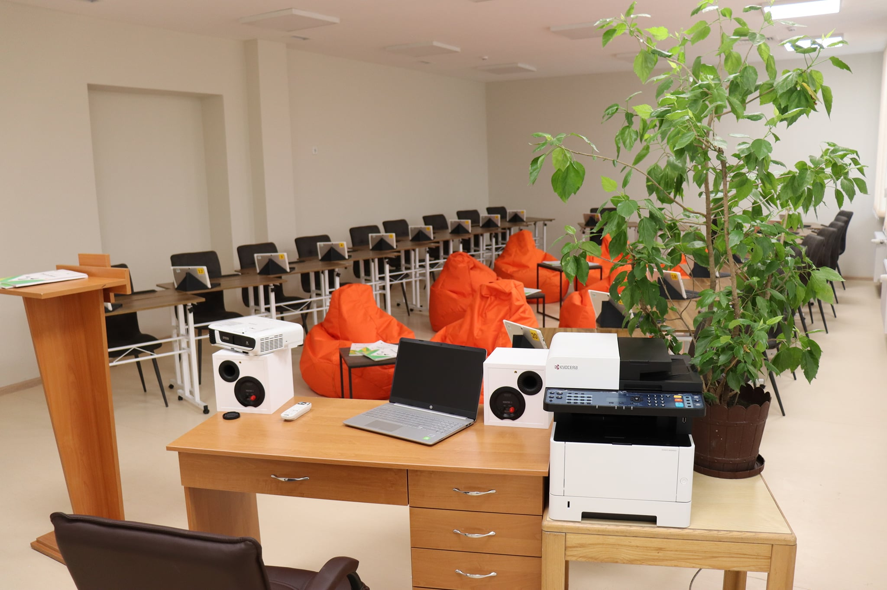

Noutați
#EuropeDay2022âï¸
02/05/2022🌟🌟🌟 Au ieșit cu slogane și pancarte în stradă pentru a celebra Uniunea Europeană. Tinerii de la Centrele de Informare ale UE și Euro Cluburile din Chișinău și Strășeni au organizat un flashmob in Piața Marii Adunări Naționale. Vezi cum au marcat tinerii Zilele Europei 2022.
Cum se pregătesc elevii să îmbrățișeze profesiile viitorului❓
22/02/2022✅Ãn Liceul Teoretic ”Constantin Spătaru†a fost amenajat un Laborator Digital dotat cu echipamente de ultimă generație. 🤩 Un spațiu modern de învățare unde elevii își vor putea îmbunătăți abilitățile digitale necesare pentru profesiile viitorului.🚀
Centrul Regional de Execelență în Domeniul Educației Antreprenoriale Sud
03/01/2022 Centrul Regional de Execelență în Domeniul Educației Antreprenoriale Sud a fost deschis în incinta Liceului Teoretic ”Constantin Spătaru”, or. Leova Educația și creșterea socio-economică a elevilor în sens larg, presupune includerea absolvenților în relațiile socio-economice inerente producției moderne, insuflându-le nevoia de a se ghida în activitățile lor nu numai de personal, dar și de interese publice, pentru creșterea eficienței producției, distribuției, schimbului și consumului de foloase materiale și spirituale. Este, de asemenea, educarea unui mod de gândire, comportament și activitate, corespunzător fundamentelor economice, morale și juridice ale societății, atitudinea unui maestru față de toate tipurile de proprietate. Junior Achievement Moldova în parteneriat cu MECC și suportul USAID a planificat să deschidă Centre Regionale de Excelență în domeniul Educației Antreprenoriale. În urma desfășurării concursului au fost selectate trei instituții din Drochia, Chișinău și Leova. Liceul Teoretic ”Constantin Spătaru”, a devenit benefiar a acestui Centru în zona de Sud.